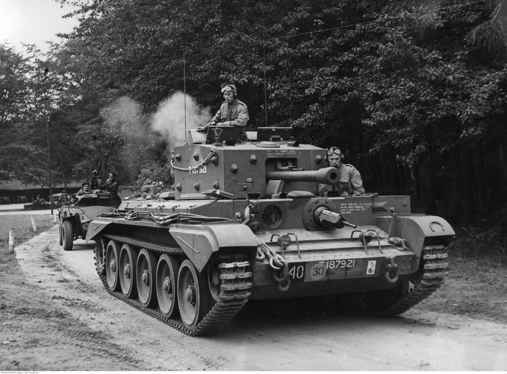

The Cromwell tank, officially the Cruiser Tank Mk VIII, was one of the most successful British cruiser tanks of World War II. Developed by Leyland and Rolls-Royce, it entered service in 1944 and was designed to combine speed, maneuverability, and decent armor, unlike the slower infantry tanks such as the Churchill. The Cromwell saw extensive combat in Northwest Europe after D-Day, serving with British and Commonwealth forces. It was praised for its speed, reliability, and low profile, though it was outgunned by heavier German tanks like the Panther. The Cromwell became the basis for later British tanks, including the Comet and Centurion, influencing postwar armored doctrine.

- Characteristics:
- Type: Cruiser tank
- Weight: 28 tons
- Crew: 5
- Armament: 75mm OQF Mk.III; 2 x 7.92mm BESA
- Speed: 64 km/h